パネルに表示されている項目は，自分で変更できます．また，パネルそのものも追加したり削除したりできます．
パネルには通常のアプリケーションソフトウェアを起動するアイコン（ランチャ）や，パネル内で動作するアプレットと呼ばれる小さなソフトウェアを組み込むことができます．パネルに登録したいアプリケーションソフトウェアをメニューから選び，右ボタンでクリックしてください．選択したメニューの下にサブメニューが開きますから，「パネルへ追加」を選んでください．
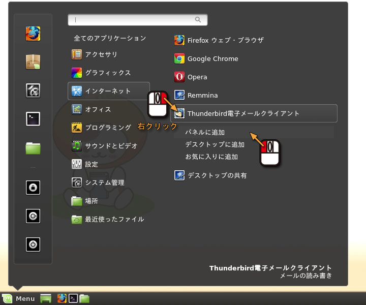
移動したいアイコンをマウスの中ボタンでドラッグしてください．
パネルにアプレットを登録するには，パネルの何も無いところを右クリックして，ポップアップしたメニューから「パネルにアプレットを追加」を選んでください．
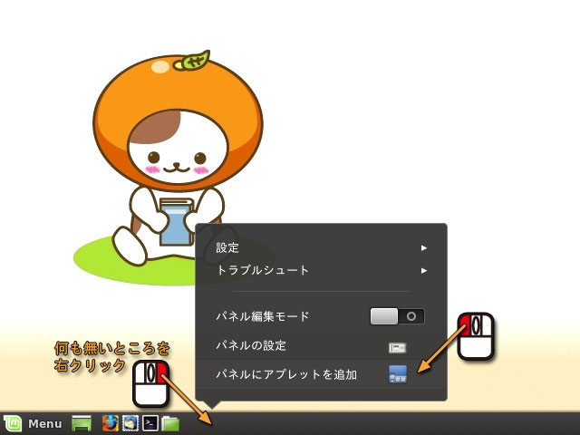
追加したいアプレットを選んで「追加」のボタンをクリックしてください．その後，「閉じる」をクリックしてください．
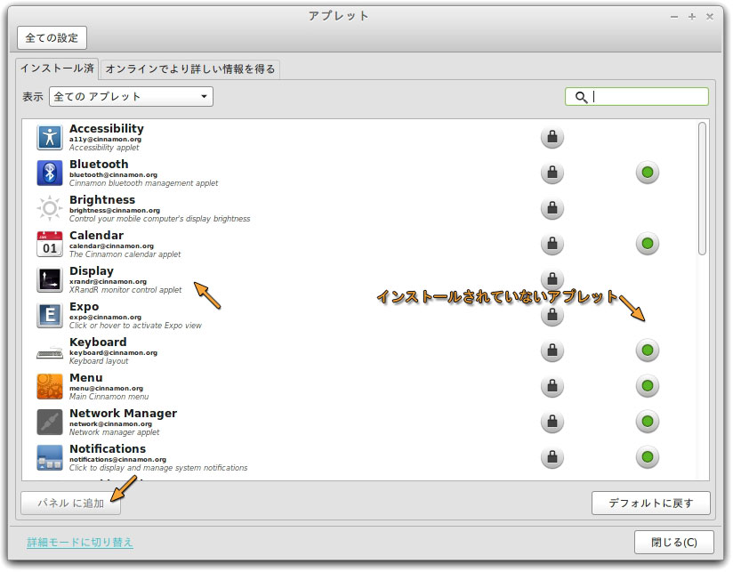
削除したいアイコンをマウスの右ボタンでクリックして，「削除」を選んでください．
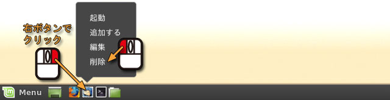
いわゆる「コピペ」の方法です．下図の「スタート」をクリックしてください．文字が表示されている部分をマウスの左ボタンでドラッグしたとき，その文字がコピー可能なら色が反転します．そこでマウスボタンを離してコピー先にマウスを移動し，マウスの中ボタンをクリックしてください．これは X Window System における基本的なコピー＆ペーストの方法です．
現在使用している GNOME というデスクトップ環境では，上記の X Window System 本来のコピー＆ペースト機能のほかに，Windows や Mac OS X のものに似たコピー＆ペースト機能が用意されています．上記と同様にコピーしたい範囲を指定した後，マウスの右ボタンをクリックして「コピー」を選んでください．
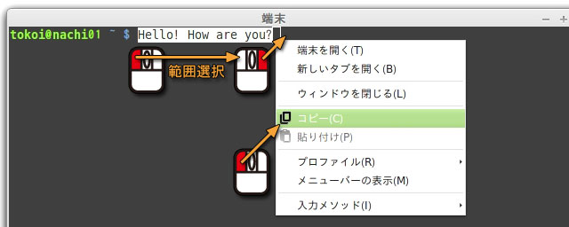
次に，コピーする先の場所を指定し，そのアプリケーションの「編集」のメニューから「貼り付け」を選んでください．これは Ctrl-V（端末の場合は Shift-Ctrl-V）をタイプしても同じことができます．
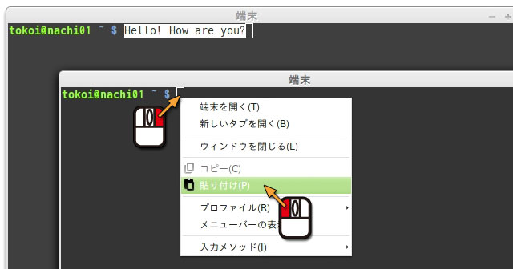
コンピュータのデータにはワープロで作成した文書やデジカメで撮影した画像など，さまざまなものがあります．これらのデータはファイルとして，コンピュータの外部記憶装置（ハードディスクなど）に記録されます．しかし，文書であれ画像であれ，コンピュータのデータであれば０と１の２進数で表されたデジタルデータなので，外部記憶装置に記録する際に一つ一つのデータを区別しておかないと，データが混ざってあとで取り出せなくなってしまいます．
そこで，ひとつのデータごとに外部記憶装置上の一定の領域を割り当て，それに名前をつけることによって，データを管理できるようにします．このように，名前をつけたデータのひと塊のことをファイルと呼び，その名前のことをファイル名と言います．
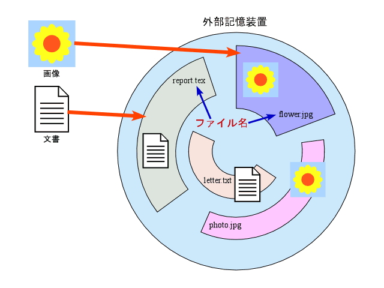
UNIX や Linux のファイル名には，英字，数字，ハイフン(-)，アンダースコア(_)，それにピリオド(.) など，スラッシュ(/) とナル文字 (\0 - この意味は情報処理II以降で学びます) 以外のが使えます．コンマ(,)や+，%もたいてい問題なく使えると思います．Windows や Mac OS X とは異なり，英字の大文字と小文字は区別されます．これら以外の記号文字には特別な機能が与えられている場合があるため，使えなくはないもののいろいろ面倒なことになるので，使わないほうが無難です．日本語の文字もファイル名に使えます．
| ファイル名に使える文字 | |
|---|---|
| アルファベット | A～Z, a～z |
| 数字 | 0～9 |
| ハイフン（マイナス） | - |
| アンダースコア（下線） | _ |
| ピリオド | . |
| そのほか | +,%,#,@,チルダ(~),コロン(:),コンマ(,) |
ただし#，チルダ(~)，コンマ(,)などは，アプリケーションソフトウェアによって特別な意味が与えられている場合があります．またハイフン(-)とピリオド(.)は，ファイル名の中で使う位置に注意（ファイル名の先頭では使わないなど）が必要です．
ファイル名の長さは255文字まで（日本語の場合は127文字まで）です．
ファイル名の末尾の，ピリオド(.)に続いた部分は，ファイル名の拡張子として利用される場合があります．拡張子は通常そのファイルの種類を示し，アプリケーションソフトウェアがそのファイルの取り扱い方法を判断するのに利用します．ただし，UNIXやLinuxにおいて拡張子の取り扱いはWindowsほど厳密ではなく，拡張子を持たないファイルも存在します．
| ファイル名の拡張子の例 | |
|---|---|
| テキストファイル | .txt (例 report.txt, readme.txt) |
| TeX ソースファイル | .tex (例 paper.tex, article.tex) |
| C 言語ソースファイル | .c (例 prog.c, main.c) |
| C++ 言語ソースファイル | .cc .c++ .cpp (例 prog.cc, main.c++) |
| オブジェクトファイル | .o (例 prog.o, main.o) |
| PostScript ファイル | .ps (例 paper.ps, figure.ps) |
| EPS ファイル | .eps .epsf (例 paper.eps, figure.eps) |
| JPEG 画像ファイル | .jpg .jpeg .jfif (例 photo.jpg) |
| GIF 画像ファイル | .gif (例 fig1.gif) |
| PNG 画像ファイル | .png (例 button.png) |
| SVG 図形ファイル | .svg (例 figure.svg) |
| VRML 図形ファイル | .wrl .vrml (例 dango.wrl) |
| OGG 音声・動画ファイル | ..ogg（例 movie.ogg） |
テキストファイルは文字だけからなるデータです．その他については後に必要に応じて解説します．
このようにファイルは，本来データの集まりに名前を付けたものに過ぎず，目に見えるような形を持ったものではありません．しかし，それでは，特にコンピュータに関する知識をあまり持っていない人にとって，とっつきにくいものになってしまいます．そこで，このファイルに対して目に見える仮の姿を与えることがよく行われます．Vine Linux では，これに Nemo というファイル管理ソフトウェア（ファイルマネージャー）を用います．なお，このようにコンピュータの操作に視覚的な表現を用いる場合を，グラフィカルユーザインタフェース (GUI) と言います．
Nemo のウィンドウは，デスクトップ（画面の背景）にある "ホーム" と書かれたフォルダのアイコンをダブルクリックして開くことができます．
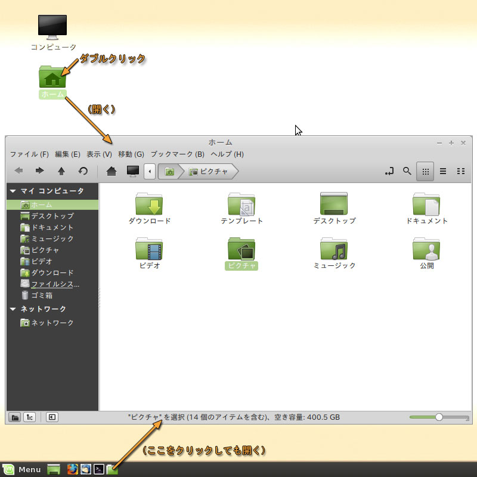
ウィンドウが開くと，あなたが所有するファイルやディレクトリ（フォルダ）の内容が表示されます．
ということで，前回の講義で CG を作るのが結構めんどくさい仕事だということは，お分 かりいただけたかと思います． で，この「めんどくさい」というのは，実はソフトウェアエンジニアにとって結構大きなモチベーションになります．最初のコンピュータの応用（アプリケーション）が弾道計算だったという話は後期のメディアサイエンス基礎でお話できるかと思いますが（内容は変更の可能性あり）， 終戦後のアプリケーションとして代表的なのは（アメリカの）国勢調査でし た．これはたくさんの人がひたすら大量の計算を繰り返すめんどくさい仕事でした（ちなみに，このような計算をする人のことを，computer すなわち「計算する人」と呼んでいました）．
そこで，このめんどくさい仕事を自動的にやってくれるようにコンピュータに命令することになりました．そのために行う作業がプログラミング です． そこで，今回はこのプログラミングの最初のステップとして，コンピュータに命令して仕事をしてもらうということについて考えてみたいと思います．
現在のパソコンの使い方は，「Firefox を - 起動して」とか「文書ファイルを - 開いて」というように，具体的な対象を指定して，それを操作するという形式になっています．このような使い方は，コンピュータの歴史の中でコンピュータの使い方をわかりやすくするための工夫が重ねられてきた結果として与えられた見かけです．前述のファイルにしても，それはデータが格納された外部記憶装置上の領域にすぎませんが，それに名前（ファイル名）や絵記号（アイコン）を付けて，利用者が理解しやすいような見かけを与えています．
しかし，そのような見かけの裏側で行われている実際のコンピュータの操作は，やはりコンピュータに仕事を命令する形で行われています．ただし，これにはいくつかのレベルがあります．コンピューターのハードウェアそのものの言葉，すなわち機械語による命令は instruction と呼ばれます．これを組み合わせて一つの仕事をするソフトウェアを作ることを，プログラミングと呼んでいます．そして，instruction を組み合わせて作成された，特定の目的をもった仕事を実行する小さなソフトウェアのことを， command - コマンドと呼びます．
今回はこのコマンドを使ったコンピュータの操作を行ってみます．
現在のコンピュータの見かけを作っているものを，グラフィカルユーザインタフェース (GUI) と呼びます．グラフィカルユーザインタフェースによって，ファイルやプログラムの操作を直観的に行うことができます．
しかし，このグラフィカルユーザインタフェース自体もプログラミングなどの作業によって作成されたものであり，その作成段階にはこういったグラフィカルユーザインタフェースが用意されていない場合があります．したがって，ソフトウェア開発の現場では（かなり整備されてきているとは言え），今でも文字主体の操作環境，すなわちキャラクタユーザインタフェース (CUI) を利用する場合があります．また，コンピュータの「動作」を理解するうえでも，この文字主体のシンプルな操作環境は有効だと考えています．
この文字主体の操作環境の中心となるものが，シェルというプログラムです．シェルは端末 (gnome-terminal) を起動すると，自動的に起動します．それでは端末のウィンドウを開いてください．
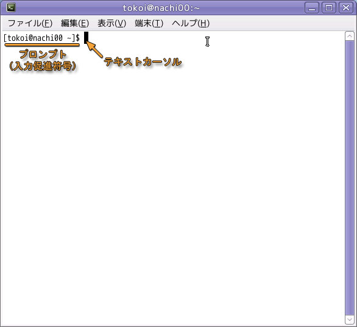
端末というプログラムは，起動するとシェルという別のプログラムを起動します．とは利用者の命令をコンピュータ（オペレーティングシステム）に伝達するインタプリタと呼ばれる種類のソフトウェアで，利用者からコマンド（命令）が与えられるのを待っています． 現在使用しているシェルは bash というものです．このようなソフトウェアには，他に sh，csh，tcsh，ksh，zsh などがあります．
"ユーザ名@コンピュータ名 ~ $" という表示はプロンプト（入力促進符号）と呼ばれ，bash がコマンド待ち状態であることを示しています．プロンプトとして用いる文字列は変更可能です．以降ではこのプロンプトを "$" １個で表します．
この端末は仮想端末と呼ばれるアプリケーションソフトウェアで，このウィンドウひとつが１台の端末装置のように振舞います．端末を複数動かせば，それぞれのウィンドウで別々の仕事をすることができます．このような仮想端末プログラムには，端末 (gnome-terminal) の他に X Window System 標準の xterm，xterm を「国際化」した uxterm など，さまざまなものがあります．
シェルはオペレーティングシステムのユーザインタフェースとして働きます．利用者はシェルを通じてコンピュータを操作します．
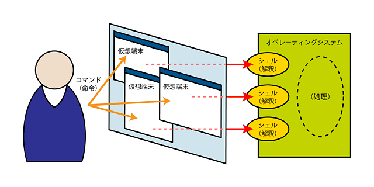
それでは，コンピュータに日付を聞いてみましょう．シェルのプロンプト（以下では $ で表します）に対して，date とタイプした後，改行（[Enter] キーをタイプ）してください．
| date コマンドを実行する |
|---|
$ date[Enter] |
するとその次の行に現在の日時が表示されます．これを，コマンドの出力と呼びます．また，そのさらに次の行に再び $ （プロンプト）が表示され，次のコマンドが与えられるのを待ちます．
| date コマンドの出力 |
|---|
$ date 2014年 5月 1日 木曜日 13:30:00 JST ←date コマンドの出力 $ ←次のコマンド待ち状態 |
abcdef というコマンドは存在しないので，実行しようとすると，エラーメッセージが表示されます．
| 存在しないコマンドを実行する |
|---|
$ abcdef[Enter] abcdef: コマンドが見つかりません． ←これはエラーメッセージ $ |
コマンドにオプションを付けて実行することで， その動作を変えることができる場合があります．date の右側の "-u" は協定世界時 (UTC) で出力するオプションです．コマンドとオプションの間は，空白をあける必要があります（続けると "date-u"というひと続きの別のコマンドだと解釈されてしまいます）．
| コマンドにオプションを付けて実行する |
|---|
$ date -u[Enter] 2014年 5月 1日 木曜日 04:33:05 UTC ←協定世界時が出力される $ |
ココマンドの実行に必要な情報を，引数（ひきすう）で与える場合もあります．今度はカレンダーを出力する cal コマンドを実行してみましょう．
| cal コマンドを実行する |
|---|
$ cal[Enter] 5月 2014 |
今度は，cal の右側に続けてスペースで区切って "7 1961" とタイプして [Enter] キーをタイプしてください．
| cal コマンドに引数を付けて実行する |
|---|
$ cal 7 1961[Enter] 7月 1961 日 月 火 水 木 金 土 1 2 3 4 5 6 7 8 9 10 11 12 13 14 15 ←1961年7月のカレンダーが出力される 16 17 18 19 20 21 22 23 24 25 26 27 28 29 30 31 $ |
ここまでで出てきたコマンド
- date
- 現在時刻を出力します．
- cal
- カレンダーを出力します．
コマンドは標準出力と呼ばれる出口に結果を出力します．標準出力は，何もしなければ端末装置につながっているので，結果は画面（仮想端末のウィンドウ）に表示されます．ここで ">" という文字を使えば，出口を切り替えて結果をファイルに保存することができます．この操作を標準出力のリダイレクトといいます．
最初に，ls というコマンドを実行してみましょう．これは現在作業している場所（ディレクトリ）におかれているファイルやディレクトリの一覧（リスト）を出力します．下線部をタイプしてください．なお，間違って sl というコマンドを実行しないよう気を付けてください．絶対にだぞ！
| ls コマンドを実行してファイルのリストを見る |
|---|
$ ls[Enter] firefox public_html rpm thunderbird windows ダウンロード テンプレート … ←作業中のディレクトリにあるファイルやディレクトリ |
それでは，date コマンドの出力を切り替えて，a というファイルに保存してみましょう．
| date コマンドの出力をファイル a に保存する |
|---|
$ date > a[Enter] ←何も出力されない |
date コマンドの出力は，画面に表示する代わりにファイル a に保存されますから，画面には何も表示されません．また，このときファイル a が新規に作成されますから，作業中のディレクトリに a というファイルが増えているはずです．もう一度 ls コマンドを実行してみてください．
| もう一度 ls コマンドを実行してファイルのリストを見る |
|---|
$ ls[Enter] a firefox public_html rpm thunderbird windows ダウンロード テンプレート … ←a というファイルが増えている |
同様にして，今度は cal コマンドの出力を，b というファイルに保存してみましょう．今度はやり方を示しませんから，自分で考えてみてください．
| cal コマンドの出力をファイル b に保存する |
|---|
$ （ここは自分で考える）[Enter] |
それでは，また ls コマンドを実行して，b というファイルが増えていることを確認してください．
| また ls コマンドを実行してファイルのリストを見る |
|---|
$ ls[Enter] a b firefox public_html rpm thunderbird windows ダウンロード テンプレート … ←b というファイルが増えている |
テキストファイルの内容を見るには，cat コマンドが使えます（他にも多くのコマンドがあります）．cat コマンドは引数に指定したファイルの内容を出力します．
| cat コマンドでファイル a の内容を出力する |
|---|
$ cat a[Enter]
2014年 5月 1日 木曜日 13:56:59 JST |
同様にして，ファイル b の内容を見てください．
ファイル b の内容を見る |
|---|
$ （ここは自分で考える）[Enter] 5月 2014 |
標準出力を既に存在するファイルにリダイレクトすると，リダイレクト先のファイルの以前の内容は消され，新しい出力で上書きされます．一度ファイル a の内容を見てみましょう．
| ファイル a の内容を見る |
|---|
$ cat a[Enter]
2014年 5月 1日 木曜日 13:56:59 JST |
そして，このファイルに date コマンドの出力を保存します．
| date コマンドの出力をファイル a に保存する |
|---|
$ date > a[Enter] |
この後，ファイル a の内容を見てください．直前に date コマンドを実行した日時に置き換わっていると思います．
| ファイル a の内容を見る |
|---|
$ cat a[Enter] 2014年 5月 1日 木曜日 14:02:31 JST ←直前に date コマンドを実行した日時に置き換わっている |
">" の代りに ">>" を使えば，既にあるファイルの後ろに別のファイルの内容を追加することができます．date コマンドを使ってファイル a の後ろに現在の日時を追加してみましょう．
| date コマンドの出力をファイル a に追加する |
|---|
$ date >> a[Enter] |
ファイル a の内容を見てみます．
| ファイル a の内容を見る |
|---|
$ cat a[Enter] 2014年 5月 1日 木曜日 14:02:31 JST 2014年 5月 1日 木曜日 14:05:24 JST ←直前に date コマンドを実行した日時が追加されている |
なお，">" や ">>" で標準出力をリダイレクトしても，エラーメッセージは表示されます．
| 存在しないコマンド abcdef の標準出力をファイル c にリダイレクトする |
|---|
$ abcdef > c[Enter] abcdef: コマンドが見つかりません. ←エラーメッセージはリダイレクトされない |
エラーメッセージの出力先は標準出力ではない（標準エラー出力に出力される）ため，標準出力をリダイレクトしてもエラーメッセージは表示されます．ただし，この例の abcdef というコマンドは存在しないため，このエラーメッセージはコマンドを起動しようとしたシェルが出力しています．なお，エラーが起きてもファイル c は作成され（内容は空），c が既に存在すれば，それまで c に入っていた内容は失われます．
標準出力のリダイレクト
- ">"という記号の役割
- ">" という文字は，コマンドの出力データを画面に表示する代りに，その右側に書かれたファイルに保存します．それまでそのファイルの中に入っていた内容は失われます．
- ">>"という記号の役割
- ">>" はコマンドの出力データを既にファイルの中に入っている内容の後ろに追加します．
cat もコマンドですから，この標準出力を別のファイルにリダイレクトできます．cat コマンドは引数に指定したファイルをそのまま出力しますから，これでファイルをコピーすることができます．ファイル a の内容をファイル b にコピーしてみましょう．もちろん，これでそれまで b に入っていた内容（cal コマンドの出力）は失われます．
| cat を使ってファイル a の内容をファイル b にコピーする |
|---|
$ cat a > b[Enter] |
ファイル a とファイル b の内容を見比べて見ましょう．
| ファイル a とファイル b の内容を見比べる |
|---|
$ cat a[Enter] 2014年 5月 1日 木曜日 14:02:31 JST 2014年 5月 2日 木曜日 14:05:24 JST $ cat b[Enter] 2014年 5月 1日 木曜日 14:02:31 JST 2014年 5月 1日 木曜日 14:05:24 JST ←同じ内容が入っている |
cat の引数にファイル名を指定しなければ，キーボードからタイプした文字がそのまま出力されます．
| 引数にファイル名を指定せずに cat コマンドを実行する |
|---|
$ cat[Enter] ←何も出力されない |
これは cat コマンドがデータの入力を待っている状態です．コマンドは結果の出口として使う標準出力に加えて，データの入り口である標準入力を持っています．標準入力は，何もしなければキーボードにつながっています．それでは，ここに何かタイプした後，[Enter] をタイプしてください．
| cat コマンドの標準入力にキーボードからデータを入力する |
|---|
$ cat How are you?[Enter] ←キーボードから入力する How are you? ←こっちは cat コマンドの出力 |
データの入力を終了するには，Ctrl-D をタイプ（[Ctrl] キーを押しながら D をタイプ）してください．
| データ入力の終了 |
|---|
$ cat How are you? How are you? Ctrl-D ←入力の終了 $ ←シェルのプロンプトが現れる |
すると cat コマンドが終了して，再びプロンプト（ここでは $ で表しています）が現れます．それでは，この cat コマンドの出力を，c というファイルに保存してみましょう．
| cat コマンドの標準入力をリダイレクトしてキーボードからの入力をファイル c に保存する |
|---|
$ cat > c[Enter] お元気ですかぁ？[Enter] ←キーボードから入力する ←何も出力されない |
何か入力したら，最後に Ctrl-D をタイプしてください．
| Ctrl-D をタイプしてキーボードからの入力を終了する |
|---|
$ cat > c お元気ですかぁ？ Ctrl-D ←入力の終了 $ |
ファイル c の内容を見てください．今度は ">" を使いません（使うとファイルの中身が消えてしまいます）．
| ファイル c の内容を見る |
|---|
$ cat c[Enter]
お元気ですかぁ？ |
ここまでで出てきたコマンド
- ls
- ファイル名の一覧（リスト）を表示します (ls というコマンド名は list を縮めたもの)．
- cat
- ファイルの中身を表示します．このコマンドは引数に複数のファイルを指定でき，それらを連結 (concatenete) して出力します．
テキストファイル（文字だけからなるファイル，文書ファイル）は， これまでやってきたように cat コマンドの出力をファイルにリダイレクトして作成できます． でもこの方法では，一旦作成したテキストファイルを修正したり，変更したりすることができません．そこで，普通テキストファイルの作成には， そういう編集機能を持った テキストエディタと呼ばれるアプリケーションソフトウェアを使います．
テキストエディタはワードプロセッサみたいなものですが， ワードプロセッサには文書のレイアウトや印刷の機能が備えられているのに対して， テキストエディタは文書の編集に使う機能が充実しています．
Unix や Linux には，ものすごくたくさんのテキストエディタがあります． ラインエディタは， まだディスプレイ上に文字や図形を表示する端末装置が普及していなかった頃（つまり昔！），紙に印字しながらタイプするタイプライタ型の端末装置で使うことを考えて作られています．ed などは（cat コマンドに似て）プロンプトすら出さないとっても不親切な作りになってますが（しかし，これは Unix の伝統的なスタイルです）， これはこれで使い込めば他のエディタではできないような凝ったことができます．
ex/vi は Unix/Linux における基本的なテキストエディタの一つです．ex は ed を少しは親切にした感じのラインエディタです．一方 vi は，ex をスクリーンモード（画面上で編集するモード）にしたスクリーンエディタです．ちなみに，vi のキー操作は， jnethack というゲームをやると自然と身に付きます（ウソ）．vim はオリジナルの vi と互換性を持ちながら非常に強化されたものです．
emacs は， この中でも特に高機能なテキストエディタです．テトリスだってできます．この特徴は自己拡張可能な点にあり，ほとんどの機能が emacs 自体がもつ emacs lisp というプログラミング言語で実現されています．
| テキストエディタの種類 | |
|---|---|
| ed | ラインエディタ，玄人向け？ |
| ex | ラインエディタ，基本です． |
| vi (vim) | Unix で最も一般的に使われる高機能なスクリーンエディタ（「アクセサリ」の中にあります） |
| emacs (GNU Emacs 24) | ターミナル／ウィンドウ両用の高機能なスクリーンエディタ（「アクセサリ」と「プログラミング」の中にあります） |
| gedit (テキストエディタ) | タブが使えるウィンドウモード用のスクリーンエディタ（「アクセサリ」の中にあります） |
| geany | 高機能なスクリーンエディタおよび統合開発環境（「プログラミング」の中にあります） |
| eclipse | Java で作られたアプリケーションの統合開発環境（「プログラミング」の中にあります） |
Mac OS X も Unix ですから，ed，ex，vi (vim)，および emacs が搭載されています．vim や emacs には Mac OS X のアプリケーションとして動くものもあります．これらには Windows 版もあります．演習室の Line Linux のメニューでは，下図のところに登録されています．
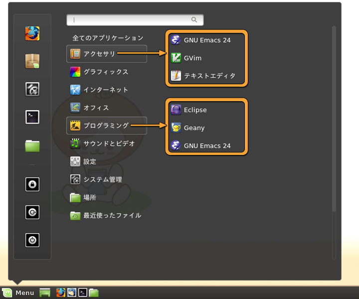
数多くのテキストエディタがある中で，実際どのテキストエディタを使うべきかはよく議論になるところですが，この講義ではどれを使ってもいいことにします．これからこの講義（以降の Linux を使う講義や演習）でどのテキストエディタを使うかは，とりあえず一通り使ってみて自分で決めてください．
なお，Unix や Linux では vi (vim) や emacs が標準的なテキストエディタだと考えられています．したがって Unix/Linux を使う限り，これらは使わないといけないものだと言われますし（ウソ），使い方を知らないと困ったことになるかもしれません．emacs に至ってはそれで人生が変わってしまった人もいるくらいです．
ですが，これらは非常に強力な分，使い方が難しいところがある（というか，Windows の「メモ帳」などとは使い勝手がだいぶ違う）ので，ここではこれらの使用を強制しません．gedit は Windows の「メモ帳」によく似ていますし，プログラムの開発を行う場合は geany などが簡単で便利だと思います．好きなものを使ってください．
とりあえずここでは emacs の説明をしておきます．emacs についてはネット上に「emacs 超入門」などいくらでもチュートリアルがありますから，そういうところを参考にしていただいても結構です．同様に vim についても「vim-jp」をはじめ多くの解説があります．
emacs や vim の起動はメニューから行うことができますが，ここでは端末のシェルから emacs というコマンドを実行してください．X Window System 上では，emacs は動かしっぱなしにして使うことが多いので，コマンドに & を付けてバックグラウンドで起動しておくと便利です．こうすると，emacs を起動したシェルも引き続き使用できるようになります．
| emacs を起動する |
|---|
$ emacs &[Enter] |
起動すると，下のようなウィンドウが現れます．ウィンドウ内に簡単な解説が表示されています．この状態ではまだ何も入力することができませんが，この解説は q をタイプすれば消えます．
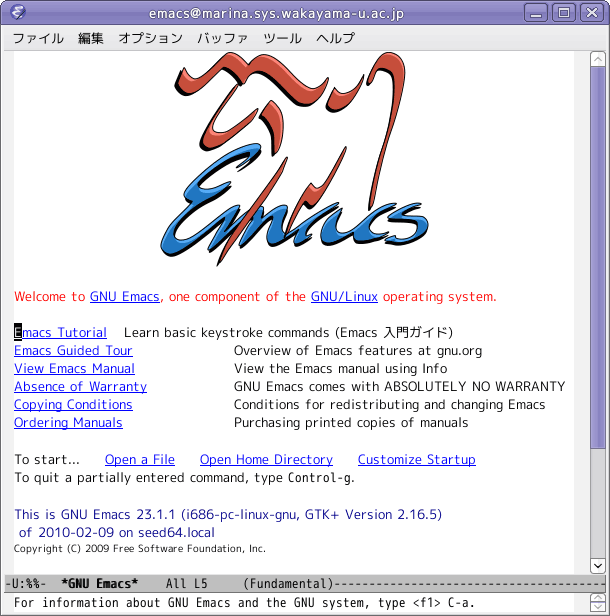
emacs は大半の操作をキーボードから行います． 一部の機能はメニューバーからも操作できますが， ここではキー操作についてのみ説明します．なお，メニューバーのメニューには，同じ機能を呼び出すキー操作が表示されている場合があります．
| キー操作の表記 | |
|---|---|
| C-x | [Ctrl]キーを押しながら，x をタイプする (Ctrl-X) |
| C-x C-c | C-x をタイプした後，C-c をタイプする |
| M-x | [Alt]キーを押しながら，x をタイプする (Alt-X) |
| ESC x | [ESC]キーをタイプした後，x をタイプする |
| 端末装置によっては Alt-X が使えない場合があるので，たいてい ESC x が Alt-X と同じ動作をするようになっています． | |
ファイルを開くには C-x C-f をタイプしてください． するとウインドウの最下行（ミニバッファ）に開くファイル名を聞いてきますので，ここで存在しないファイル名を指定すれば，そのファイルを新規に作成します．
| ファイルを作成する | |
|---|---|
| C-x C-f をタイプする．ミニバッファに開くファイル名を聞いてくる． | 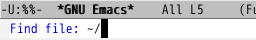 |
| ここでは file.txt というファイルの作成を行うことにする．最後に [Enter] をタイプ． | 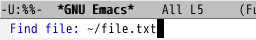 |
ファイルが存在すれば，そのファイルがバッファに読み込まれ，ウィンドウの上部に内容が表示されます．今は新規作成なので，バッファ内は空でになっており，ミニバッファには (New File) と表示されているはずです．
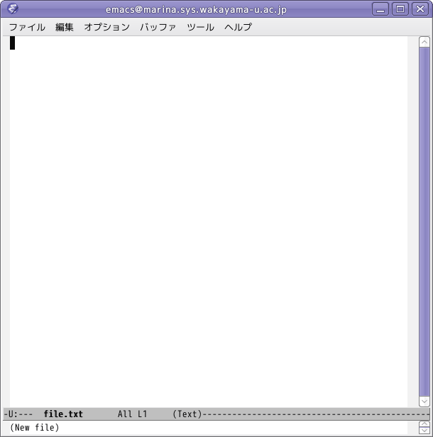
バッファとミニバッファemacs において編集対象のテキストファイルを保持する機構のことを， バッファと呼びます． emacs は同時に複数のバッファを管理することができます． 通常はそのうち一つのバッファの内容がウィンドウに表示されています（画面を分割して，複数のバッファを同時に表示することもできます）．また，コマンドやファイル名などの入力を行うときには，カーソルがウィンドウの最下行に移動します．この場所はミニバッファと呼ばれます．
試しに，次の内容をタイプしてみてください．この通り正確に打つ必要はありません．だいたいでかまいません．行末では改行して（[Enter] をタイプして）ください．時間がかかるようだったら，コピー＆ペーストしても構いません．
A girl and a boy bump into each other -- surely an accident.
A girl and a boy bump and her handkerchief drops -- surely another accident.
But when a girl gives a boy a dead squid -- *that had to mean something*.
-- S. Morganstern, "The Silent Gondoliers"
このバッファの内容をファイルに保存します．C-x C-s をタイプしてください．
| バッファをファイルに保存する | |
|---|---|
| C-x C-s をタイプする．バッファの内容がファイルに保存される． | 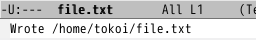 |
ファイルが保存できたら，一旦 emacs を終了します．C-x C-c をタイプしてください．
問い合わせが表示されるときファイルの編集中に，別の方法でそのファイルを修正してしまうと，バッファをファイルに保存する際に問い合わせが表示されます．また，バッファをファイルに保存せずに emacs を終了しようとしたときにも問い合わせが表示されます．問い合わせ自体は簡単な英語ですので，問い合わせにしたがって yes か no をタイプして [Enter] をタイプしてください（y か n をタイプするだけの場合もあります）．
もう一度 emacs を起動してください．
| emacs を起動する |
|---|
$ emacs &[Enter] |
先ほど保存したファイルを開きます．C-x C-f をタイプしてください．ここでファイル名として file.txt を指定するのですが，ミニバッファに開くファイル名を聞いてきたら，先頭の２文字 "fi" だけをタイプしてみてください．
| 既存ファイルを開く | |
|---|---|
| C-x C-f をタイプする．ミニバッファに開くファイル名を聞いてくる． | |
| fi までタイプする． | 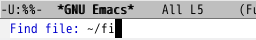 |
| [Tab] をタイプする． | 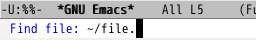 |
| ファイル名が完成したら [Enter] をタイプする． | |
ミニバッファにおいてコマンドやファイル名を入力する際，途中まで文字をタイプしたあと [Tab] をタイプすると， 残りの文字を補完してくれます（コンプリーション機能）． 補完の結果，コマンドやファイル名が一意に決まらない（候補が複数ある）ときは， その一覧を表示します．
先ほどタイプした内容が表示されたら C-n C-p C-f C-b の４つのキーを使って，たぶん左上隅の A のところにある文字カーソルを，３行目の -- のところに移動してください．
A girl and a boy bump into each other -- surely an accident.
A girl and a boy bump and her handkerchief drops -- surely another accident.
But when a girl gives a boy a dead squid -- *that had to mean something*.
-- S. Morganstern, "The Silent Gondoliers"
ここで C-k をタイプすると，カーソルから右が消えます．
A girl and a boy bump into each other -- surely an accident.
A girl and a boy bump and her handkerchief drops -- surely another accident.
But when a girl gives a boy a dead squid _
-- S. Morganstern, "The Silent Gondoliers"
もう一度C-k をタイプすると，改行が消えて次の行とくっつきます（行が長くなるので，右端が折り返されるかもしれません）．
A girl and a boy bump into each other -- surely an accident.
A girl and a boy bump and her handkerchief drops -- surely another accident.
But when a girl gives a boy a dead squid -- S. Morganstern, "The Silent Gondoliers"
さらにC-k をタイプすると，くっついた部分も消えます．
A girl and a boy bump into each other -- surely an accident.
A girl and a boy bump and her handkerchief drops -- surely another accident.
But when a girl gives a boy a dead squid _
カーソルを１行目の -- に移動してください．
A girl and a boy bump into each other -- surely an accident.
A girl and a boy bump and her handkerchief drops -- surely another accident.
But when a girl gives a boy a dead squid
ここで C-y をタイプすると，先ほど消えた部分がこの位置に挿入されます．
A girl and a boy bump into each other -- *that had to mean something*.
-- S. Morganstern, "The Silent Gondoliers"-- surely an accident.
A girl and a boy bump and her handkerchief drops -- surely another accident.
But when a girl gives a boy a dead squid
次に文字列の検索を行ってみましょう．C-s をタイプしてください．するとミニバッファに I-serch: と表示されます．ここに girl とタイプしてください．
| 文字列を検索する | |
|---|---|
| C-s をタイプする． | 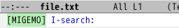 |
| girl （検索する文字列）をタイプする． | 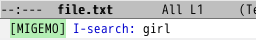 |
多分カーソルは３行目の girl という単語の位置に移動したと思います．
A girl and a boy bump into each other -- *that had to mean something*.
-- S. Morganstern, "The Silent Gondoliers"-- surely an accident.
A girl and a boy bump and her handkerchief drops -- surely another accident.
But when a girl gives a boy a dead squid
この状態でもう一度 C-s をタイプすると，４行目の girl のところに移動します．
A girl and a boy bump into each other -- *that had to mean something*.
-- S. Morganstern, "The Silent Gondoliers"-- surely an accident.
A girl and a boy bump and her handkerchief drops -- surely another accident.
But when a girl gives a boy a dead squid
さらにC-s をタイプすると，ここより後に girl はないので，ミニバッファに次のようなメッセージが出ます．
| 同じ文字列を検索する | |
|---|---|
| 続けて C-s をタイプする． | |
| バッファを一回りする（これ以上見つからない）と右のメッセージが出る． | 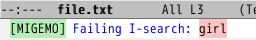 |
それでも，もう一度 C-s をタイプすると，今度はバッファの先頭から girl を探し始めます．
A girl and a boy bump into each other -- *that had to mean something*. -- S. Morganstern, "The Silent Gondoliers"-- surely an accident. A girl and a boy bump and her handkerchief drops -- surely another accident. But when a girl gives a boy a dead squid
１行目の girl のところにカーソルが来たら，[Enter]をタイプしてください．すると検索を開始した位置が記憶されます（マーク）．今度は C-s を２回続けてタイプしてください．すると再び girl （すなわち直前に探した文字列）を探し始めます．
A girl and a boy bump into each other -- *that had to mean something*.
-- S. Morganstern, "The Silent Gondoliers"-- surely an accident.
A girl and a boy bump and her handkerchief drops -- surely another accident.
But when a girl gives a boy a dead squid
３行目の girl のところに来たら，[Enter]をタイプしてください．そして C-w をタイプすると，１つ目の girl の位置（マーク位置）から現在位置までが削除されます．なお，カーソル位置に明示的にマークを付けるには，C-[スペース] をタイプします．
A girl and a boy bump and her handkerchief drops -- surely another accident.
But when a girl gives a boy a dead squid
C-w で削除した内容も，C-y で現在のカーソル位置に挿入できます．
それでは，最後にC-_ を何回かタイプしてください．これまでに行った編集作業が取り消されます．この操作はアンドゥ (Undo) と呼ばれます．"_"（アンダースコア，下線）をタイプするには，[Shift]キーを同時に押す必要があるので，C-_ をタイプするには[Ctrl]キーと[Shift]キーを同時に押す必要があります．
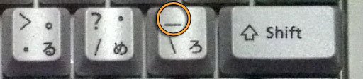
もしC-_ がうまく働かないようなら，代わりにC-x u をタイプしてみてください．
ファイルが開いた直後の状態に戻ったら，今度は C-x C-w をタイプし，ミニバッファに file2.txt とタイプして，[Enter]をタイプしてください．
| ファイルを別名で保存する | |
|---|---|
| C-x C-w をタイプする． | 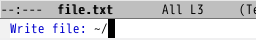 |
| ファイル名をタイプする． | 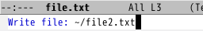 |
C-x C-s が現在のファイル名でファイルを保存するのに対し，C-x C-w は別のファイル名でファイルを保存します．保存が終了したら C-x C-c で emacs を終了してください．
バックアップファイルについてC-x C-s を使って現在のファイル名でバッファを保存すると，file2.txt~ のように，ファイル名の後ろに ~（チルダ）を付けたファイルも作成されます．このファイルは編集前の内容を保存したバックアップファイルです．不要なら削除してください．
emacs コマンドの引数にファイル名を指定すれば，そのファイルを開きます．そのファイルがなければ，新規に作成します (New File)．
| 引数でファイル名を指定する |
|---|
$ emacs file2.txt &[Enter] |
なお，上のように引数にファイル名を指定して emacs コマンドを実行すると，ウィンドウが二分割されることがあります．使わないほうのウィンドウを閉じるには C-x 1 （使っているほうを閉じるには C-x 0）をタイプしてください．ちなみに C-x 2 をタイプすれば，一つのウィンドウを二分割できます．
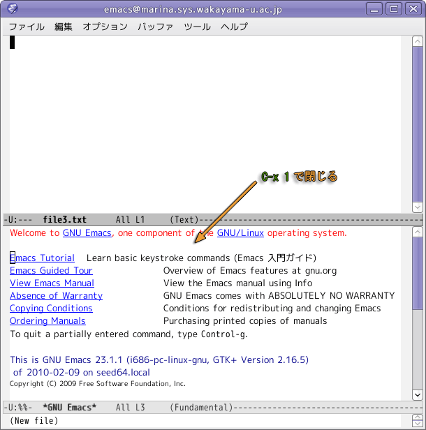
emacs にはこのほかにも非常に多くの機能があります（メールの読み書きや Web ブラウザにも使えるほか，ゲームなども組み込まれています）が，ここではよく使用するキー操作の抜粋を示します．今はとりあえずここは読み飛ばして，後で必要に応じて読み返してください．
| キー操作 | |
|---|---|
| ファイルを開く | C-x C-f |
| 別のファイルをカーソル位置に読み込む | C-x i |
| 文字入力 | その文字をタイプ |
| カーソル直前の一字削除 | C-h または [Backspace] |
| カーソル位置の一字削除 | C-d または [Delete] |
| 挿入／上書き切り替え | [Insert] |
| カーソル移動 | 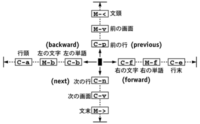 |
| 文字列の検索 |  |
| 文字列の置換 | 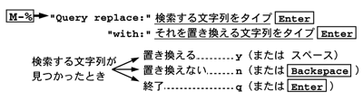 |
| １行空ける | C-o |
| 行末まで削除 | C-k |
| カーソル位置にマークを付ける | C-[スペース] |
| カーソル位置とマーク位置の入れ替え | C-x C-x |
| マーク位置からカーソル位置まで削除 | C-w |
| マーク位置からカーソル位置までコピー | M-w |
| 削除／コピーした内容を貼り付け | C-y |
| 変更取り消し | C-_ または C-x u |
| 操作の中止 | C-g |
| ファイルの保存 | C-x C-s |
| 名前を付けてファイルを保存 | C-x C-w |
| emacs を終了 | C-x C-c |
| emacs 本来の設定では，[Delete] キーでカーソル直前の１文字を削除し，C-h ([Backspace]) でヘルプ関連の機能を呼び出すようになっていますが，演習室のコンピュータでは[Backspace] キーでカーソル直前の１文字を削除するよう設定されています． | |
emacs では，日本語の入力に切り替えに，[半角/全角] のほかに，C-\ が使えます．C-\ は [Ctrl] を押しながら ￥ または ＼ をタイプします． [半角/全角] は X-Window System 上のほかのアプリケーションと同じものですが，C-\ は emacs 自体の機能です．

日本語の入力モードから抜け出るには， もう一度 C-\（あるいは [Shift]-[スペース]，[半角/全角]）をタイプしてください．
\（バックスラッシュ）という文字\（バックスラッシュ）は "￥" あるいは "＼" のキーで入力できます．従来 Windows や Mac OS で使われていた Shift_JIS という文字コードでは，この二つ（の半角文字）は同じ文字でしたが，演習室の Linux や最近の Windows や Mac OS X で使われている UTF-8 という文字コードでは，この二つは異なります．演習室の Linux では，どちらのキーでも "＼"が入力されます．Mac OS X では [Option] を押しながら "￥"をタイプすれば "＼" が入力できます．
emacs には，実際に使いながら使い方を学ぶチュートリアルが用意されています．emacs をメインに使おうと考えるなら，このチュートリアルを実行することを勧めます．
チュートリアルを実行するには，メニューバー（emacs のウィンドウの最上部）のヘルプから Emacs チュートリアル を選ぶか，[F1] キーをタイプしたあと t をタイプしてください．このチュートリアルを読みながら， 指示に従って操作の練習を行ってください．すると TUTORIAL.ja というファイルが保存されます．このファイルは不要なので，チュートリアル終了後は削除して構いません．
emacs が動かなくなってしまったときemacs が止まってしまって先に進めなくなってしまったときは，C-g（中止）を数回タイプしてみてください．それでも何の反応もない場合は，emacs を起動した端末のウィンドウで Ctrl-C をタイプして，emacs を強制終了してください．
シェル上でテキストファイルの印刷を行うには lpr コマンドを用います． ただし，できるだけ a2ps や mpage というコマンドを介して，用紙を節約するようにしてください．今は印刷する必要はありません．
| テキストファイルを印刷する |
|---|
$ lpr ファイル名[Enter] $ mpage ファイル名 | lpr[Enter] $ a2ps ファイル名 | lpr[Enter] |
印刷を取り消したいときは，lpq コマンドで取り消す印刷ジョブの番号を確認してから，lprm コマンドの引数にその番号を指定してください．
emacs を使ってメールの読み書きを行うことができます．メール自体はテキストファイルですから，テキストエディタはそれを書くという作業のために最適なソフトウェアです．ここでは Wanderlust の使い方を紹介します．実は，以前は Thunderbird よりも Wanderlust を使うことを推奨していました（が，継続して使ってくれる人が少ないのであきらめました）．
以下のものをメールで tokoi@sys.wakayama-u.ac.jp に送ってください．メールの件名 (Subject) は shori1-04 にしてください．期限は次週の水曜日中までです．

長い行の取り扱いについてemacs は「テキストエディタ」なので， 文書の見栄えのレイアウトをするような機能はほとんど持っていません． 長い行はウィンドウの右端で折り返しますが， これもあくまで表示のために便宜的に行っているに過ぎず， それが「１行」として取り扱われていることには変わりありません．なお，文書をきれいにレイアウトして印刷する場合には，この講義では LaTeX というシステムを使います（後述）．